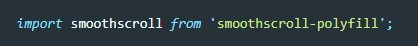
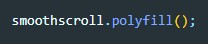

официальная github страница разработчика полифила
1 установка через npm
npm install smoothscroll-polyfill --save2 импорт в главном файле JS (при сборке через webPack)
 import smoothscroll from 'smoothscroll-polyfill';3 запускаем функцию которая активирует полифил
 smoothscroll.polyfill();